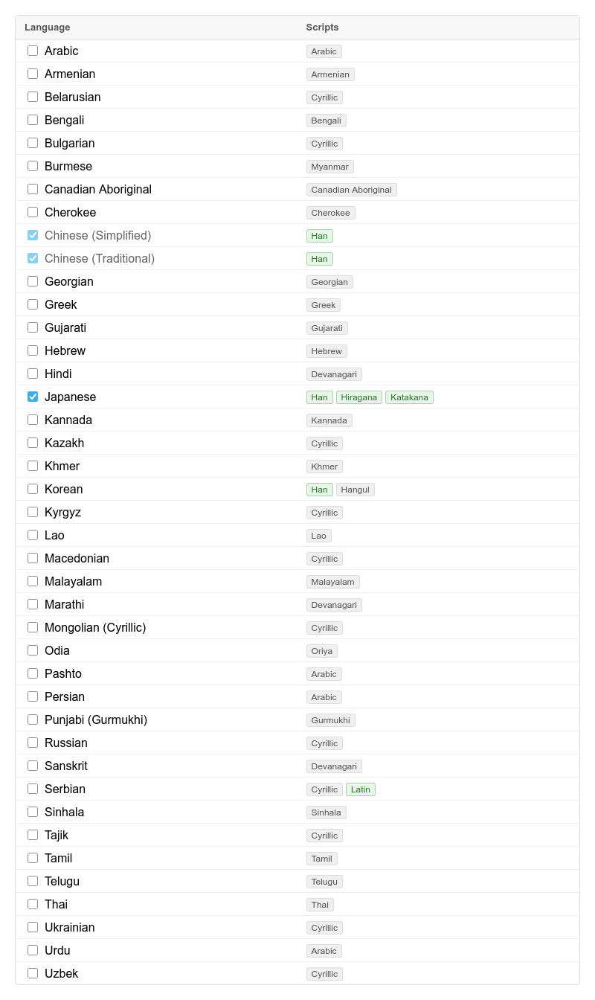
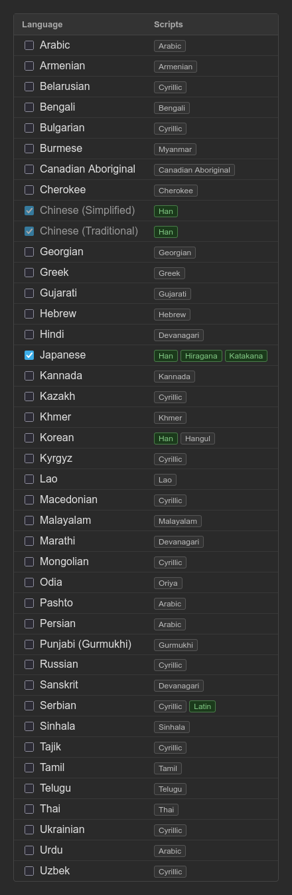
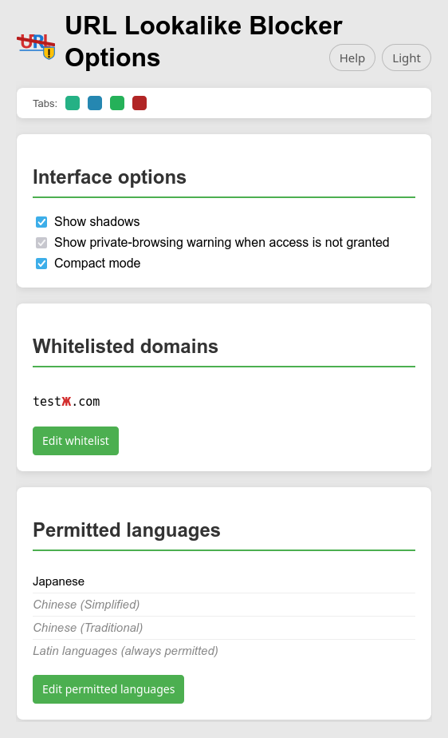
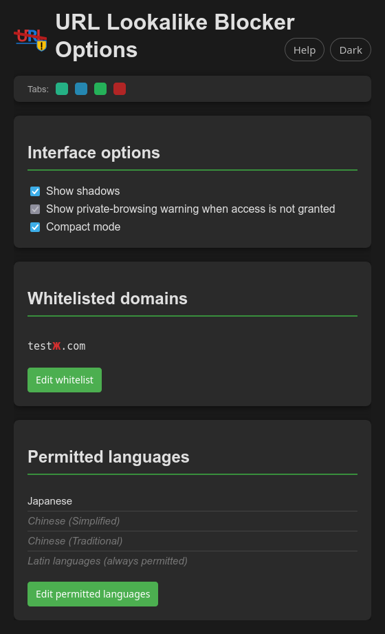
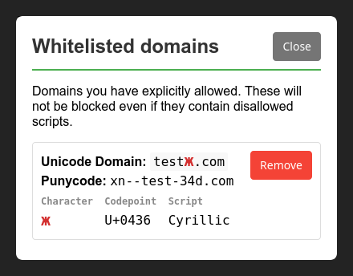
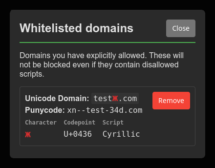
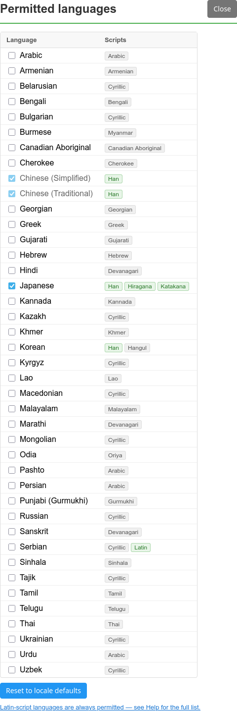
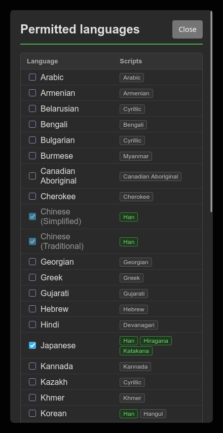

When you visit a website, your browser shows the domain name (like google.com). Attackers can register domains that look identical to real ones by substituting characters from other languages — for example, using a Cyrillic а instead of the Latin a in apple.com. These are called IDN homograph attacks.
This extension inspects every domain name your browser visits and blocks or warns you when it detects characters that are likely part of a spoofing attempt.
A block page appears when the domain contains characters from scripts (writing systems) that you have not enabled in settings. For example, if a domain contains Cyrillic characters and you have not enabled Russian, it is blocked.


Only use Allow this domain if you are confident the site is legitimate.
This page appears when a domain contains a character that visually resembles a Latin letter — for example the Cyrillic р mimicking p in рaypal.com. This is a targeted attack technique. The confusable character is highlighted in red and the lookalike is shown (e.g. "Looks like: p"). This warning can appear even if you have the relevant script enabled, because legitimate sites do not normally use characters that resemble letters from a different script.


Only use Allow this domain if you are confident the site is legitimate.
This page appears when a domain label mixes characters from two or more scripts that are not commonly combined — for example Latin and Cyrillic together in testж.com. The non-Latin characters are highlighted in amber. This warning can appear even if you have the relevant scripts enabled, because legitimate sites do not normally mix scripts within a single domain label. If enabling a specific language would permit this combination, a hint is shown (e.g. "enable Serbian in Extension Settings").


Only use Allow this domain if you are confident the site is legitimate.
Left-clicking the extension icon in the toolbar opens the Options page. Right-clicking gives a small menu with Open Options and Help.
If the Options page (shown in the next section) is already open, clicking the icon switches to the Options page rather than opening a second copy.
When one or more blocked or warning pages are open, the icon shows a red number badge indicating how many there are. The badge clears automatically once all blocked and warning tabs have been resolved or closed.


On Firefox for Android, the extension icon is not shown in the toolbar — see Compact view below.
The Options page is where you can use a coloured square to return to a block or warning page, modify interface options, edit whitelisted domains and change which languages are permitted. On tablets and desktops the full language table and whitelist editor are shown inline.


When multiple blocked or warning pages are open at once, each tab gets a unique coloured rounded square so you can tell them apart.
When you click Apply changes in Options, the page closes and focus returns to the blocked tab that opened it.


By default, Firefox does not run extensions in private windows. If you use private browsing and want this extension to protect those windows too, you need to enable it manually.
When the extension is not allowed to run in private windows, the Options page shows a warning banner at the top:


Open the Firefox menu (≡) → Extensions and Themes, find this extension, and set Run in Private Windows to Allow. Alternatively, type about:addons into a new tab's address bar.
If you cannot grant private-window access — for example in a managed Firefox setup where the option is disabled by policy — click Dismiss this warning on the banner, or untick Show private-browsing warning when access is not granted in the Interface options section. The protection itself remains off; dismissing only hides the banner.
Three preferences that take effect immediately when changed, with no Apply step required.
Domains you have explicitly allowed (via "Allow this domain" on a block or warning page) are listed here with their offending characters annotated. You can remove any domain at any time — it will be blocked or warned again on the next visit.
In Compact mode, the whitelist shows each domain with its offending characters highlighted in red. Click Edit whitelist to open the full editor.
Tick the languages whose scripts (character sets) you want to allow in domain names. Your browser's locale is used as the starting point — so if your Firefox language is set to Japanese, then Japanese is already permitted and the Han, Hiragana, and Katakana scripts are allowed. Latin is universally permitted regardless of locale.
Each language row shows its scripts as small tags. A green tag means that script is currently permitted; a grey tag means it is not.
Languages that use only a single non-Latin script are enabled automatically when that script turns green — for example, enabling Japanese enables Han, which then causes Chinese (Simplified and Traditional) to be enabled automatically (shown with a dimmed label). Multi-script languages like Korean are never ticked automatically and must be enabled explicitly.
Unticking a language removes its scripts from the permitted set. Any other enabled language that relied on those same scripts is also disabled in turn, cascading until the permitted set is stable.


Latin is permitted by default, so URLs written in any Latin-script language load normally — the extension doesn't block them or warn you about them. The languages shown in the options panel are the most widely-used ones, but many more Latin-script languages exist and are equally unaffected by this extension.
Croatian, Slovenian, Lithuanian, Latvian, Estonian, Albanian, Icelandic, Irish (Gaeilge), Welsh, Scottish Gaelic, Maltese, Luxembourgish, Faroese — plus all languages already shown in the options panel.
Swahili, Somali, Hausa, Yoruba, Igbo, Zulu, Xhosa, Māori, Samoan, Hawaiian, Cebuano.
Some languages are officially written in Latin but also have significant Cyrillic or other-script usage. Their Latin-script URLs always load normally; URLs using a different script depend on whether that script is enabled in settings.
Re-checks the languages that match your current Firefox locale setting, and resets to just those language(s). Applied immediately.
Changes to language settings are held in memory until you click Apply changes. The orange "Unsaved changes" dot appears while there are pending edits. Discard changes reverts to the last saved state without closing the page.


Compact mode is enabled by default on phones. On tablets and desktops it can be enabled manually via Compact mode in Interface options. The language and whitelist sections are shown as collapsed concise read-only summaries with buttons to show and allow the full functionality of that section. Tap Edit whitelist or Edit permitted languages to open each section.
On Android, there is no toolbar icon — the most reliable way to reach the Options page is via the Open extension options button on any block or warning page. The right-click context menu is not available on Android; the Help button in the Options page header opens this page.


In compact mode, whitelisted domains are shown as a read-only list above the Edit whitelist button. Tapping Edit whitelist opens the list of whitelisted domains and permits deletion.


In compact mode, permitted languages are shown as a read-only list above the Edit permitted languages button. Tapping Edit permitted languages opens the full language table where languages can be enabled or disabled in the same way as the languages section in the desktop view.


The following sections from the desktop view apply equally in compact mode, where functionality and usage differs from Desktop view ahead it will be mentioned here:
© 2026 Lee MacKinnell
Dual-licensed under MPL-2.0 OR GPL-3.0 — the recipient chooses which terms to comply with. AMO releases are distributed under MPL-2.0.
Source code, full licence text, and contribution notes: github.com/feldegast/url-lookalike-blocker